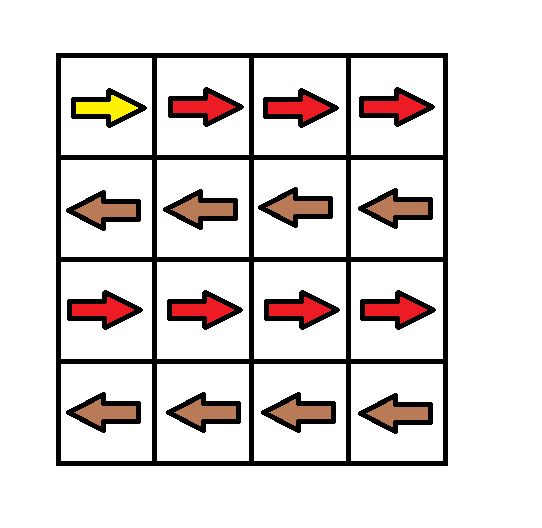
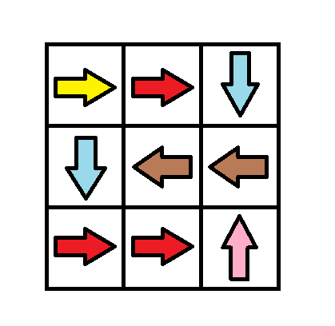
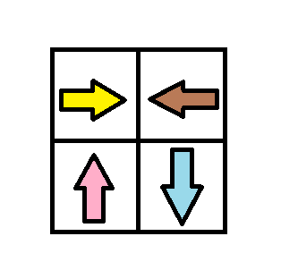

1368. 使网格图至少有一条有效路径的最小代价
0-1 BFS：顺着本格箭头走成本 0、改向走成本 1；双端队列队头进 0 成本、队尾进 1 成本，保证出队即最短。
思路
- 每个格向 4 个邻居连边：沿
grid[r][c]箭头方向权 0，其余方向权 1（花 1 改一格箭头）。 - 0-1 BFS：松弛成功时，权 0 的邻居
addFirst、权 1 的addLast；队列里的距离始终非降，等价于 Dijkstra 但不用堆。 - 起点入队，反复「出队 → 松弛四邻」，最后
dist[m-1][n-1]即答案；起点即终点答案为 0。
图解
最优解
1import java.util.*;2 3class Solution {4 // 方向编号 1~4：右、左、下、上5 private static final int[] DR = {0, 0, 1, -1};6 private static final int[] DC = {1, -1, 0, 0};7 8 public int minCost(int[][] grid) {9 int m = grid.length, n = grid[0].length;10 int[][] dist = new int[m][n];11 for (int[] row : dist) Arrays.fill(row, Integer.MAX_VALUE);12 ArrayDeque<int[]> dq = new ArrayDeque<>();13 dist[0][0] = 0;14 dq.addFirst(new int[]{0, 0});15 while (!dq.isEmpty()) {16 int[] cur = dq.pollFirst();17 int r = cur[0], c = cur[1];18 for (int d = 0; d < 4; d++) {19 int nr = r + DR[d], nc = c + DC[d];20 if (nr < 0 || nr >= m || nc < 0 || nc >= n) continue;21 // 顺着本格箭头走成本 0，改向走成本 1：0-1 BFS，短的从头进、长的从尾进22 int w = grid[r][c] == d + 1 ? 0 : 1;23 if (dist[r][c] + w < dist[nr][nc]) {24 dist[nr][nc] = dist[r][c] + w;25 if (w == 0) dq.addFirst(new int[]{nr, nc});26 else dq.addLast(new int[]{nr, nc});27 }28 }29 }30 return dist[m - 1][n - 1];31 }32}题目
给你一个 m x n 的网格图 grid 。 grid 中每个格子都有一个数字，对应着从该格子出发下一步走的方向。 grid[i][j] 中的数字可能为以下几种情况：
- 1 ，下一步往右走，也就是你会从
grid[i][j]走到grid[i][j + 1] - 2 ，下一步往左走，也就是你会从
grid[i][j]走到grid[i][j - 1] - 3 ，下一步往下走，也就是你会从
grid[i][j]走到grid[i + 1][j] - 4 ，下一步往上走，也就是你会从
grid[i][j]走到grid[i - 1][j]
注意网格图中可能会有 无效数字 ，因为它们可能指向 grid 以外的区域。
一开始，你会从最左上角的格子 (0,0) 出发。我们定义一条 有效路径 为从格子 (0,0) 出发，每一步都顺着数字对应方向走，最终在最右下角的格子 (m - 1, n - 1) 结束的路径。有效路径 不需要是最短路径 。
你可以花费 cost = 1 的代价修改一个格子中的数字，但每个格子中的数字 只能修改一次 。
请你返回让网格图至少有一条有效路径的最小代价。
示例 1：

输入：grid = [[1,1,1,1],[2,2,2,2],[1,1,1,1],[2,2,2,2]] 输出：3 解释：你将从点 (0, 0) 出发。 到达 (3, 3) 的路径为： (0, 0) --> (0, 1) --> (0, 2) --> (0, 3) 花费代价 cost = 1 使方向向下 --> (1, 3) --> (1, 2) --> (1, 1) --> (1, 0) 花费代价 cost = 1 使方向向下 --> (2, 0) --> (2, 1) --> (2, 2) --> (2, 3) 花费代价 cost = 1 使方向向下 --> (3, 3) 总花费为 cost = 3.
示例 2：

输入：grid = [[1,1,3],[3,2,2],[1,1,4]] 输出：0 解释：不修改任何数字你就可以从 (0, 0) 到达 (2, 2) 。
示例 3：

输入：grid = [[1,2],[4,3]] 输出：1
示例 4：
输入：grid = [[2,2,2],[2,2,2]] 输出：3
示例 5：
输入：grid = [[4]] 输出：0
提示：
m == grid.lengthn == grid[i].length1 <= m, n <= 100
题面取自力扣当前版本。
数据快照 2026-11-04。题面版权归力扣所有，本站点仅供本人学习使用，请勿对外发布。